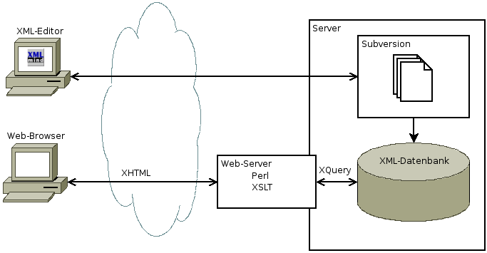
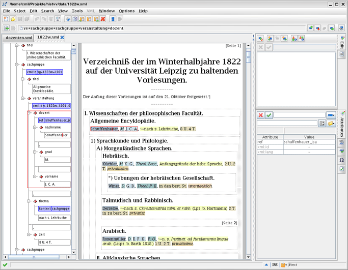

Das Portal präsentiert alle Angaben auf der Grundlage eines eigens für die Vorlesungsverzeichnisse des 19. Jahrhunderts entwickeltes XML-Schemas, das prinzipiell auch auf andere Vorlesungsverzeichnisse und Zeiträume angewendet werden kann.
Die Vorlesungsverzeichnisse wurden eingabetechnisch nicht zerrissen, sondern ganzheitlich erfasst und mit Hilfe der eXtensible Markup Language (XML) semantisch getaggt, bevor sie in einer XML-fähigen Datenbank gespeichert wurden. Wichtiges Kriterium war, die Textgestalt bei der Eingabe nicht verändern und die semantisch bedeutsamen Teile nicht isolieren zu müssen, sondern sie im ursprünglichen Zusammenhang darzustellen. So kann das Schema auch die im 19. Jahrhundert deutlich variierende Gestalt der Vorlesungsverzeichnisse verarbeiten.
Von der Dateneingabe via XML-Editor bis zur Datenausgabe via Browserfenster war das Portal erstellende Projekt wie folgt organisiert:

Alle Arbeitsschritte wurden über eine Versionsverwaltung gesichert, die sowohl bei den Programmcodes wie bei den Daten alle Bearbeitungsstände reproudzierbar macht. Die Abbildung der in XML-Dokumente konvertierten Vorlesungsverzeichnisse auf eine XML-fähige Datenbank geschah hier über eine Berkeley Datenbank, auf der die Nutzer über eine Abfragesprache die Daten über den Webserver finden.
Für die Dateneingabe wurde der Editor XMLmind benutzt, der als Personal Edition kostenfrei ist.

Für die technische Umsetzung wurde auf Open-Source-Software (Apache-Webserver, Berkeley DB XML, Trac) und offene Standards (XML, RELAX NG, XQuery) zurückgegriffen. Mit der von Google weiterentwickelten OCR-Software Tesseract wurden bei der Digitalisierung eines Teils der Vorlesungsverzeichnisse gute Ergebnisse erzielt, vor allem ab dem Sommersemester 1856, als die Verzeichnisse nicht mehr durchgängig in Fraktur gesetzt wurden.
Vorlesungsverzeichnisse sind Gebrauchstexte mit serieller Struktur, bei denen einzelne Passagen semantisch ausgezeichnet werden müssen, um sie maschinenlesbar abzubilden. Nicht alle Besonderheiten des Layouts sind übernommen worden. Gesperrt gedruckte Professorennamen beispielsweise wurden lediglich semantisch getaggt, die Sperrung wird daher auch im elektronischen Volltext nicht reproduziert. Sperrungen und Antiqua-Passagen innerhalb von Vorlesungstiteln wurden jedoch als Kursivierungen übernommen. Durch den jederzeit möglichen Einblick in die gescannten Originaldokumente ist der typografische Ursprungszustand stets einsehbar.
Bis mindestens 1901, dem Jahr der II. Orthographischen Konferenz, gab es keine genormte deutsche Rechtschreibung. In den Vorlesungsverzeichnissen des 19. Jahrhunderts wechseln also verschiedene Schreibungen einander ab ("Medicin" steht neben "Medizin", "Litteratur" neben "Literatur", "Göthe" neben "Goethe" usw.). Für die Volltextversionen des Portals wurden keinerlei Vereinheitlichungen vorgenommen. Offensichtliche Setzfehler wurden jedoch korrigiert und auch als solche kenntlich gemacht. Darüber hinaus gibt es bei einigen unkorrigierten Fällen [sic!]-Vermerke.